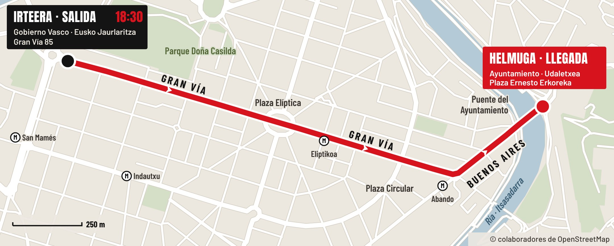

Call to action · 1 Dec 2026
Demonstration on 1 December, from the Basque Government to City Hall

Tuesday 1 December, 6.30 pm. We set off from the Basque Government offices (Gran Vía 85) and walk to Bilbao City Hall.
Called by Ekologistak Martxan, FACUA Euskadi and the Federation of Residents' Associations of Bilbao, under the slogan “Sader-Profersa Kanpora! Noiz arte?” (Sader and Profersa out! Until when?).
The route
Gran Vía 85 (Basque Government) → Plaza Elíptica → Plaza Circular → Calle Buenos Aires → City Hall bridge → City Hall. About 2 km through the centre of Bilbao.

How to come
With three more families. A demonstration fills up one family at a time. Tell at least three: the neighbours in your building, families from school, your friends. And relatives and friends from outside the neighbourhood too: air does not stop at neighbourhood boundaries.
With your flag and your banner. Take the flag down from your balcony for an evening and bring it along. And make your own banner: a piece of cardboard or an old sheet and a thick marker are enough. The more, the better.
With children. It is a family march with a festive atmosphere, through city-centre streets. They are the ones who spend their days a few hundred metres from the plant.
Slogans for the demonstration
Pick one or make up your own.
- Sader-Profersa Kanpora!
- Leihoak ireki nahi ditugu · We want to open our windows
- Nuestra salud vale más que vuestros beneficios · Our health is worth more than your profits
- Aire garbia nahi dugu · We want clean air
- Gure osasuna ez dago salgai · Our health is not for sale
Print and hand out
Everything is ready to print at home or at a copy shop.
- The demonstration poster, for your building entrance, the lift and local shops.
- The leaflet, black and white and bilingual (Spanish and Basque), for letterboxes.
- The stickers, on A4 sheets to print on adhesive paper.
- The images and videos, for WhatsApp groups and social media.
- No flag yet? Ask for one in the WhatsApp community.

But isn't Profersa already going? What is this demonstration for?
What has been announced affects only Profersa, the fertiliser factory. The City Council has given initial approval to an agreement with the Agaleus group to bring forward its closure, to around mid-2027, valued at just over 3 million euros.
Sader is not part of that agreement. The hazardous waste plant remains in Zorroza, with a permit to move to the Port that expires in June 2031 and no published decision requiring it to close. In 2015 an agreement was already signed for it to leave in 2018, and it is still here.
That is why we are marching: to demand a closure date for Sader, public data and a health study of local residents. Read the story about the agreement.
Share it